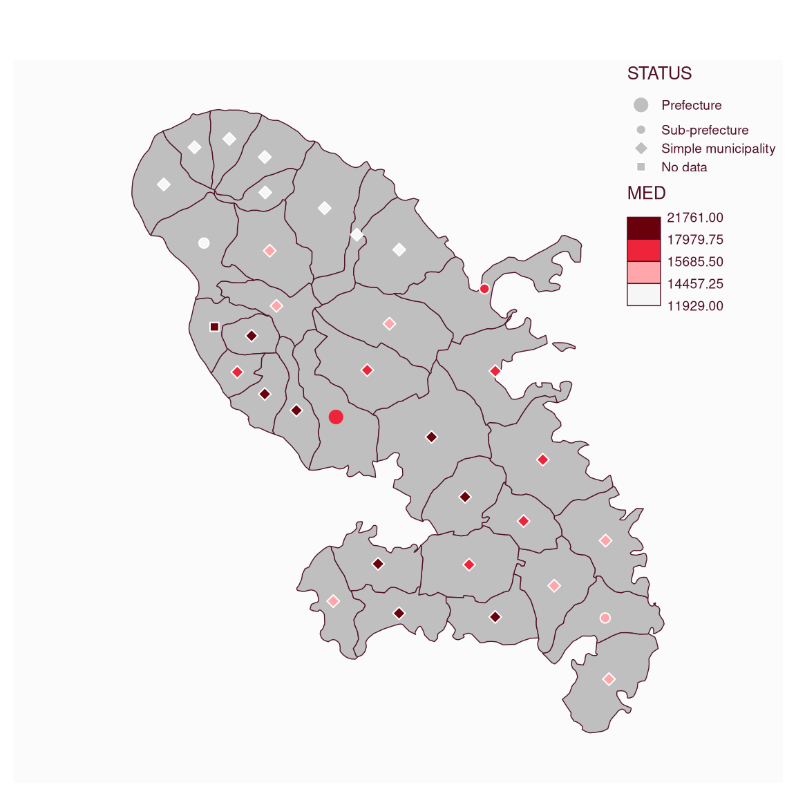

mf_map() with symb_choro type creates symbols that reflect modalities
of a first qualitative variable and colored to reflect the classification of
a second variable.
This map types uses two variables and some arguments need to be set for both variables (see Details).
For polygons, centroids are used to plot symbols. This map type is not available for lines.
Arguments
- x
object of class
sf(polygons or points)- var
names of the variables to map. The first value refers to the symbols categories, the second one to the choropleth coloration.
- type
"symb_choro"
- pch
a vector of types of symbols, see pch. The length of
pchshould match the number of modalities.- cex
a vector of sizes for symbols. The length of
cexshould match the number of modalities.- lwd
border width of symbols
- border
border color for symbols, a hex code or color name given by colors. The default color is the background color (see mf_theme).
- val_order
modalities order in the legend, a character vector that matches
varmodalities. Default to alphabetic order of modalities.- pal
a set of colors (hex codes) or a palette name. Palette names can be obtained with hcl.pals. The default palette is the pal_seq palette (see mf_theme).
- rev
if
palis a palette name, whether the ordering of the colors should be reversed (TRUE) or not (FALSE)- breaks
either a numeric vector with the actual breaks, or a classification method name. The main methods are 'quantile', 'equal', 'msd', 'ckmeans' (natural breaks), 'Q6' and 'geom'. See mf_get_breaks for details.
- nbreaks
number of classes
- pch_na
type of symbol for missing values, see pch
- cex_na
size of symbol for missing values
- col_na
color for missing values, a hex code or a color name given by colors
- alpha, expandBB, extent, bg, add
arguments described in mf_map
- leg_*
legend arguments described in mf_map. See details for arguments with two values.
Details
Legend arguments that need two values are: 'leg_title', 'leg_no_data'. The first value refers to the symbols legend, the second one to the choropleth legend.
Examples
mtq <- mf_get_mtq()
mf_map(mtq)
mtq$STATUS[4] <- NA
mf_map(mtq, c("STATUS", "MED"),
type = "symb_choro", lwd = 1,
pal = "Reds 3", breaks = "quantile", nbreaks = 4,
cex = c(2, 1, 1), pch = c(20, 21, 23), pch_na = 22,
leg_pos = "topright", border = "white",
val_order = c("Prefecture", "Sub-prefecture", "Simple municipality")
)
